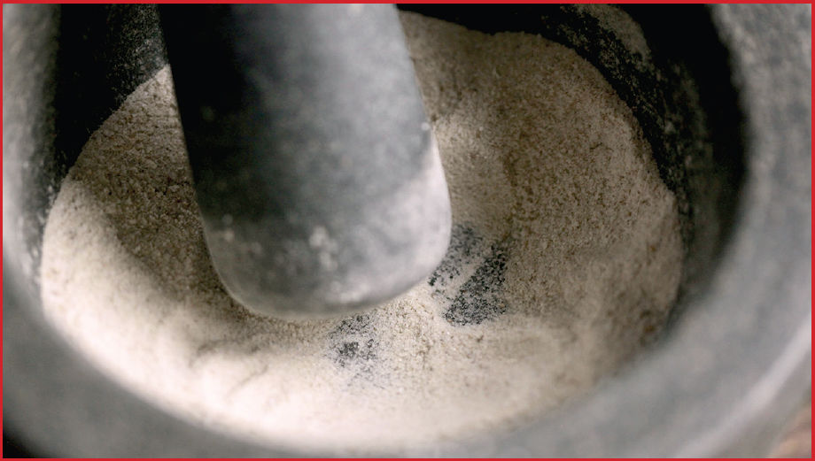
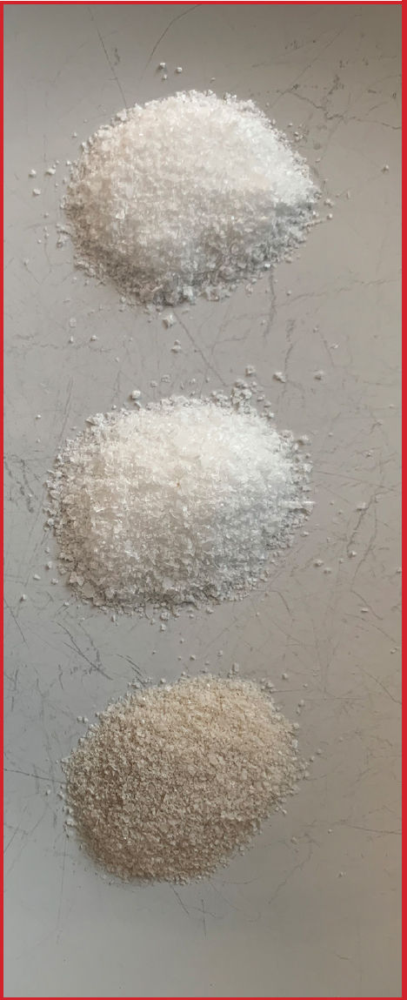
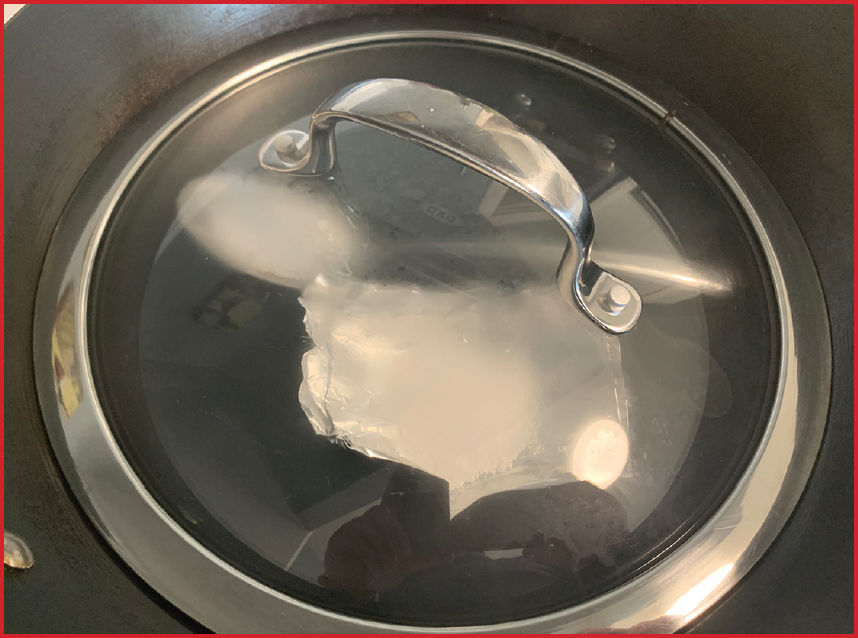

Toast Your Salt to Add Wok Hei to Any Dish

Toasting salt in a wok is a traditional technique for dishes like Cantonese salt and pepper shrimp. Tasted side by side, toasted salt acquires a lightly smoky aroma reminiscent of good wok hei (see here). It also visibly changes color, acquiring a yellowish brown hue. However, NaCl (sodium chloride, i.e., table salt) is a very stable molecule that should not react through heating at normal wok ranges (it doesn’t melt until a whopping 1,473°F/801°C), and the kosher salt I use (Diamond Crystal) is 99.83 percent pure sodium chloride (some salts have iodine or anti-caking agents added, which could alter their color when heated).
So what was causing the color and flavor change? I posed this question over social media, where several metallurgists and chemists chimed in with suggestions for experiments.
First, I tried heating salt in a stainless steel skillet side by side with a carbon steel wok. After 5 minutes at around 600°F (315°C), the salt in the stainless steel skillet remained unchanged compared to a raw control, while the salt in carbon steel had turned brownish yellow. This confirmed that it’s not a chemical change solely in the salt; it has to have something to do with either the carbon steel itself or the seasoning on the surface of the steel. I noted that the carbon steel pan smoked during this operation, while the stainless steel did not, due to the seasoning on the surface of the carbon steel.
Some folks suggested that if iron was leaching off into the salt, then a powerful magnet should affect the salt, so I tried passing a strong rare earth magnet over the brown salt. There was no movement at all. Next, I tried dissolving the salt in a glass of water. Aha! The salt dissolved completely but left a brown deposit on the surface that collected in little clumps. Rubbing the deposit in my fingers revealed that it was composed of tiny particles. This seemed to confirm my suspicion that the color and flavor comes from deposits from the seasoning that are vaporizing during the toasting process.
If this were the case, then the salt should acquire color and flavor in the presence of smoke from the seasoning, even if it’s not in direct contact with the wok itself. So to test this, I made a small aluminum foil boat and filled it with a layer of salt. I also filled a stainless steel spoon with salt. I placed these two vessels in the bottom of my wok, placed a lid over the top, then heated the wok.
Both salts acquired the brownish yellow tinge of toasted salt. Moreover, the steel spoon, foil boat, and lid of the wok also acquired a similar yellowish brown haze.

All of this together indicates that the color and flavor of toasted salt comes from deposits from the oil/polymers vaporizing from the wok itself—the same stuff that contributes to the smoky flavor of wok hei. Given that the toasted salt has some of that wok hei flavor, this makes perfect sense. It’s also worth noting that using this toasted salt to season your food in place of regular will impart some smokiness to it, even if it hasn’t been cooked in a wok.
